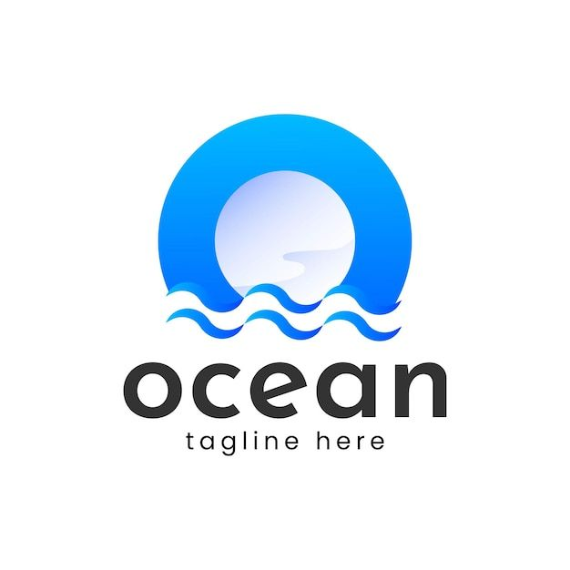

Our oceans sustain all life on Earth — from the smallest plankton to the largest whales.
We work to preserve marine ecosystems by reducing pollution,
protecting coral reefs,
and supporting sustainable fishing practices. Together, we can restore balance to our oceans
and secure a
healthy future for marine life.
Explore coral reefs, discover sea creatures, and protect marine habitats.
Join cleanups, reduce plastic waste, and keep our oceans healthy and alive.
By clicking on the below button, Join cleanups, reduce plastic waste, and keep our oceans healthy
and alive and learn how to take part